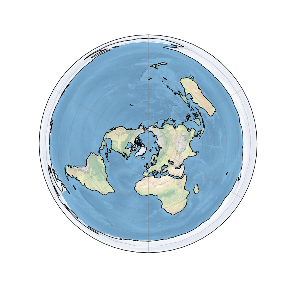
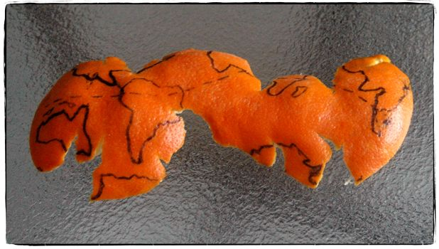
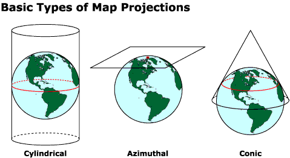
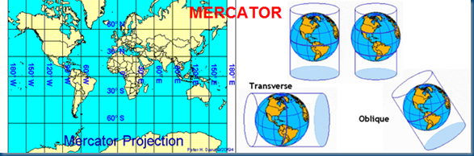
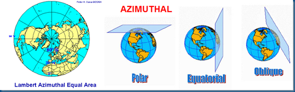
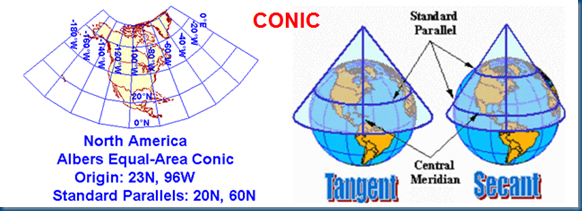
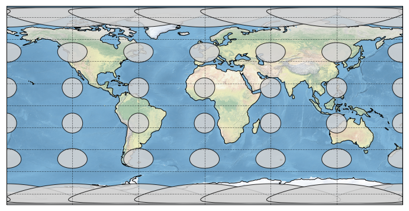

1.3 Map Projections¶
Goal: Introduce the concepts of projecting 3D spherical geography onto a 2D plane.
Outline:
Why we need map projections
Types of projections for different situations
This introductory text is modified from a tutorial on working with geospatial data using the library cartopy that was presented at the 2018 Scipy conference by Phileas Elson (lots of great things to learn in this tutorial if you want to dig into it at some point):
https://github.com/SciTools/cartopy-tutorial
The purpose of this introduction is to give you a bit of a background on map projections, reference systems and other geospatial terms. This will help you to:
choose map projections that are appropriate for plotting data
understand the terms used in the
cartopyfunctions which is a function library we will use for plotting geospatial data
The world is not flat / 2D¶
(sorry flat-Earthers)

Azimuthal equidistant projections of the sphere … have been co-opted as images of the flat Earth model, depicting Antarctica as an ice wall surrounding a disk-shaped Earth. (Wikipedia: Flat Earth)
Most of our media for visualization are flat¶
Our two most common media are flat:
Paper
Screen
But there are a few that aren’t…¶
For example:
3D rendering engine (the engine is then typically responsible for projecting the data to 2D for presentation to screen)
A Spherical Projector…
[Map] Projections: Taking us from spherical to flat¶
A map projection (or more commonly refered to as just “projection”) is:
a systematic transformation of the latitudes and longitudes of locations from the surface of a sphere or an ellipsoid into locations on a plane. [Wikipedia: Map projection].
The major problem with map projections¶

The surface of a sphere is topologically different to a 2D surface, therefore we have to cut the sphere somewhere
A sphere’s surface cannot be represented on a plane without distortion.
Watch the video embedded below (click the image to watch it at this link: https://youtu.be/kIID5FDi2JQ). This video gives an introduction (with nice accompanying visualizations) of this issue and different projections along with the positives and negatives of different commonly used ones.

Different projections¶
We are going to use the function library cartopy to make maps. cartopy supports a number of different map projections which enable the 3 dimensional surface of Earth to be shown in 2 dimensions on our computer screens. I (Maggie Avery) like the Robinson projection (although I like Mollweide more)– you can see what the says about me by referring to this XKCD comic (https://xkcd.com/977/). Having watched the above video will give you some context to appreciate these jokes:

You can check out the list of projections supported by cartopy here: https://scitools.org.uk/cartopy/docs/latest/crs/projections.html
Common distortions of map projections¶
Properties of maps that are often not preserved in projections:
Area
Shape
Direction
Distance
Scale
Classifying projections¶
Map projections are commonly classified:
By [2D] surface classification
By preserving a given property
Projections by surface classification¶

Downside: Not all projections can be classified in this way -> Leads to big “pseudo” and “other” groups.
Cylindrical¶

Source: http://ayresriverblog.com/2011/05/19/the-world-is-flat/
Meridians and paralells are straight and perpendicular.
Azimuthal¶

Source: http://ayresriverblog.com/2011/05/19/the-world-is-flat/
Parallels are complete circles
Great circles from central point are straight lines.
Conic¶

Source: http://ayresriverblog.com/2011/05/19/the-world-is-flat/
Meridians are straight equally-spaced lines
Parallels are circular arcs.
Projections by preserving metric¶
Downside: Some projections can live in multiple groups.
Conformal¶
Also known as Orthomorphic.
These projections preserve angles locally. Implying that circles anywhere on the Earth’s surface map to circles of varying size in the projected space.
Examples of conformal projections:
Mercator
Transverse Mercator
Stereographic
Lambert conformal conic
Use in large scale maps (zoomed in)
Often used to preserve shape to represent their physical counterpart. Seamless online maps like OSM/Google/Bing typically use a Mercator projection although Google Maps has begun using an 3D-rendered globe projection when the user zooms out:
The first launch of [Google] Maps actually did not use Mercator, and streets in high latitude places like Stockholm did not meet at right angles on the map the way they do in reality. [ref]
The major drawback: it is difficult to compare lengths or areas.
Use in small scale maps (zoomed out)
Maps reflecting directions, such as an [aero]nautical chart, or whose gradients are important, such as a weather maps, are often projected by conformal projections.
Historically, many world maps are drawn by conformal projections, but the fact that the scale of the map varies by location makes it difficult to compare lengths or areas. Some have gone as far as calling the Mercator projection imperialistic and racist.
Equidistant¶
No map projection can be universally equidistant.
Some projections preserve distance from some standard point or line.
Examples of projections that preserve distances along meridians (but not parallels):
Equirectangular / Plate Carree
Azimuthal equidistant
Equal-area¶
Equal-area maps preserve area measure, generally distorting shapes in order to do so.
Examples of equal area projections:
Albers conic
Eckert IV
Goode’s homolosine
Lambert azimuthal equal-area
Lambert cylindrical equal-area
Mollweide
Sinusoidal
Compromise¶
Rather than perfectly preserving any metric properties, compromise projections aim strike a balance between distortions. These compromises are often at the cost of polar distortions.
Examples:
Miller
Robinson
Winkel Tripel
Tissot’s indicatrix¶
A mathematical contrivance in order to characterize local distortions of a map projection. Multiple circles (on the sphere/ellipse) of constant area are drawn on the map. By analysing the distortions, we can identify (or more often rule-out) particular preserving metrics. You can see how dramatic the distortion is in an equirectangular projection.
